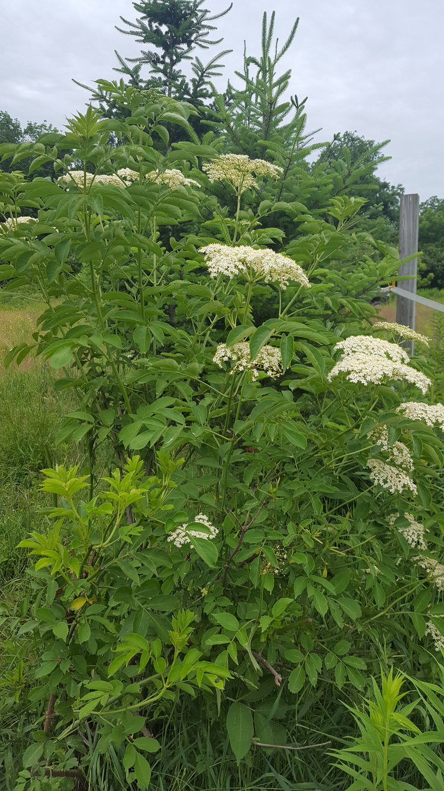

Elder (Sambucus nigra)
How to recognize Elder
Elderberry bush is a a mid to high reaching bush and is easy to recognize. Here's how you can identify:
-
Height and Growth Pattern
- Elderberry most commonly grows in a bushy, shrub-like pattern.
- Mature elderberry plants can range from 9 to 12 feet (2.7 to 3.7 meters) tall.
- Occasionally, elderberry can also grow in a small, single-stem tree pattern, but that is much less common.
- European elderberries can grow up to 20 feet (6.1 meters) tall.
-
Habitat and Bark
- Look for elderberry in moist habitats near streams, marshes, or moist forests.
- Elderberry plants love areas with good drainage.
- The bark of mature elderberry plants is woody brown, becoming harder with age.
- New growth is smooth and brown, but older parts have tough, woody bark that's hard to bend.
- Be cautious not to confuse elderberry with water hemlock, which has green stems with purple streaks and is poisonous.
-
Leaves
- Elderberry leaves are light green and can be 2 to 5 inches (5.1 to 12.7 cm) long and 1 to 2 inches (2.5 to 5.1 cm) wide.
- They have serrated edges (finely toothed) and a thin point at the end.
- When you touch the leaves, they may feel slightly hairy
Medicinal propertiesof elder flowers
-
Immune System Support:
- Elder flowers are rich in antioxidants and vitamin C, which can help boost your immune system.
- Consuming elder flower tea or extracts may help prevent or alleviate common colds and flu-like symptoms.
-
Anti-Inflammatory Properties:
- Elder flowers contain compounds that have anti-inflammatory effects.
- They may help reduce inflammation in conditions like arthritis or sore throats.
-
Respiratory Health:
- Elder flowers have been traditionally used to treat respiratory issues.
- They can help soothe coughs, reduce congestion, and ease breathing.
-
Fever Reduction:
- Elder flowers are known for their **febrifuge** properties, which means they can help lower fever.
- Elder flower tea may be beneficial during feverish conditions.
-
Skin Health:
- Elder flower extracts are used in skincare products due to their anti-aging and skin-soothing effects.
- They can help improve skin tone and reduce inflammation.
-
Digestive Aid:
- Elder flowers have mild diuretic and laxative properties.
- They may aid digestion and promote regular bowel movements.
-
Relaxation and Sleep:
- Elder flower tea has a calming effect and may help with insomnia or restlessness.
- It's often used as a natural remedy for promoting relaxation and better sleep.
Remedy preparation
- Elderflower Tea
- Ingredients.
- Dried elderflowers (about 1 tablespoon per cup of water)
- Boiling water
- Steps:
- Place the dried elderflowers in a teapot or cup.
- Pour boiling water over the flowers.
- Cover and steep for about 10 minutes.
- Strain the tea to remove the flowers.
- Enjoy your soothing elderflower tea! You can add honey or lemon for extra flavor.
- Elderflower Syrup
- Ingredients.
- Fresh or dried elderflowers (about 10-15 flower heads)
- Sugar (about 1 cup)
- Water (about 1 cup)
- Lemon zest (optional)
- Steps:
- In a saucepan, combine the sugar and water.
- Add the elderflowers and lemon zest (if using).
- Simmer gently for about 20 minutes.
- Strain the mixture to remove the flowers.
- Let the syrup cool and store it in a glass jar.
- Use the elderflower syrup as a sweetener for drinks, desserts, or drizzle it over pancakes.
- Elderflower Tincture
- Ingredients.
- Fresh elderflowers (enough to fill a glass jar)
- Vodka or brandy (enough to cover the flowers)
- Steps:
- Fill a glass jar with fresh elderflowers.
- Pour vodka or brandy over the flowers, covering them completely.
- Seal the jar and let it sit in a cool, dark place for about 4-6 weeks.
- Strain the liquid into a clean bottle.
- Take a few drops of the elderflower tincture as needed for immune support or relaxation.